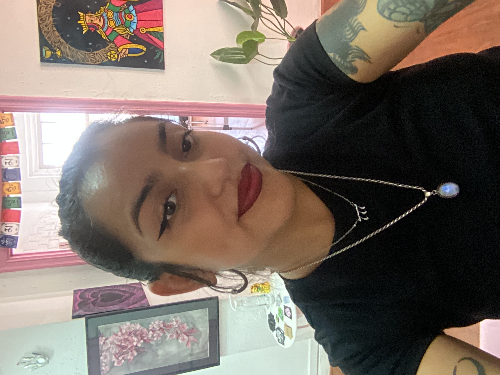

Curriculum Vitae
Isidora Correa Flores

Datos personales
Soy Isidora, emprendedora, actual estudiante de Front End, terapeuta y tatuadora. Nací en Santiago de Chile el 8 de agosto de 1995, Trabajo de manera independiente desde el 2018 en proyectos relacionados con las terapias naturales y la salud humana así como el arte y el diseño.
Me caracterizo por tener diversos intereses, me gusta mucho crear y trabajar en equipo. Estoy abierta a cualquier proyecto que involucre la creatividad, el bienestar y la innovación.
Formación académica
- 2015-Pedagogía en artes en universidad Alberto Hurtado
- 2016-Salud y terapias naturales IDMA
- 2022-Escuela de artes y oficios de Santiago
- 2022-Front end en Desafío Latam
Experiencia laboral
- 2018-Centro comunitario Cerrillos
- 2019-Atención privada de terapias naturales en taller Jade
- 2020-Atención en municipalidad de peñalolén
- 2021-Atención privada como terapeuta en Universidad de Chile
Contacto
- Teléfono: +56954239673
- Correo electrónico: Isidoracorreaflores@gmail.com
- Linkedin
Portafolio.html